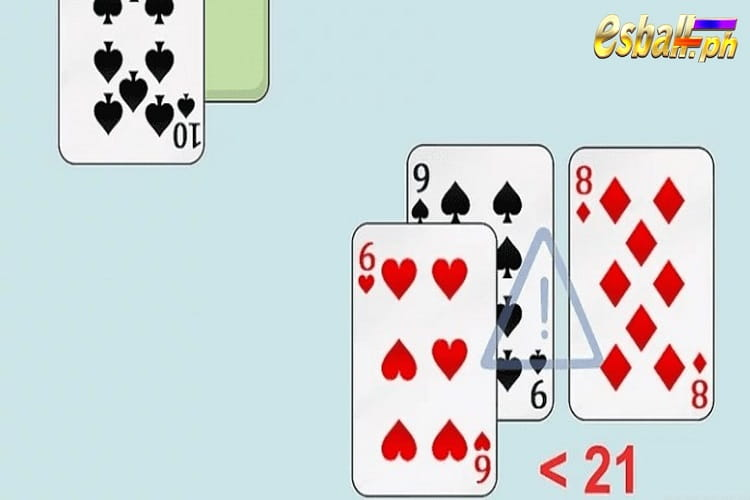
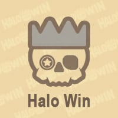

Game Introduction
Sa mundo ng mga casino, ang magandang kapalaran ay karaniwang nakangiti sa iilan lamang na masuwerteng indibidwal. Gayunpaman, ang Blackjack ay isa sa mga pambihirang laro ng pagsusugal kung saan maaari kang makipagkumpitensya nang patas sa dealer. Hindi tulad ng mga larong umaasa sa dalisay na swerte, ang patuloy na panalo sa Blackjack ay nangangailangan ng mga manlalaro na sumunod sa blackjack strategy batay sa mga probabilidad. Upang mapahusay ang the odds of winning Blackjack, magsimula sa pamamagitan ng pag-aaral ng pangunahing diskarte para sa paglalaro ng smart card, at pagkatapos ay master ang card counting system. Ang tagumpay sa mesa ng Blackjack ay nakasalalay hindi lamang sa swerte kundi pati na rin sa diskarte at kasanayan. Ang pagiging pamilyar sa mga panuntunan sa laro, pag-unawa sa mga tuntunin at opsyon, at paggawa ng mga desisyon batay sa mga card na hawak, tulad ng kung tatama o tatayo, at kung hahatiin, ay susi sa pagpapabuti ng iyong panalong porsyento sa Blackjack. Habang tumataas ang iyong pang-unawa sa laro, gagawa ka ng mga pagpapasya nang may higit na kumpiyansa.
Paano Taasan ang Logro ng Panalong Blackjack
Gayunpaman, ang pagsunod sa pangunahing diskarte lamang ay hindi makatitiyak ng matatag na tagumpay sa katagalan. Samakatuwid, sinusubukan ng ilang manlalaro na gumamit ng mga sistema ng pagbibilang ng card. Ang pagbibilang ng card ay hindi isang kumplikadong problema sa matematika; ito ay batay sa pagtatantya ng ratio ng mataas sa mababang halaga ng mga card na natitira sa deck batay sa mga card na nilalaro na.
Ang pamamaraang ito ay maaaring makatulong sa iyo na gumawa ng mas tumpak na mga desisyon sa pagtaya, pagtaas ng iyong porsyento ng panalong sa mahabang panahon sa pamamagitan ng pagpapataas ng mga the odds of winning Blackjack. Ang pangunahing bagay ay upang subaybayan ang mga card na nilalaro, bumuo ng isang tunay na bilang, at ipakita ang ratio ng mataas sa mababang halaga ng mga card na natitira sa deck. Ang isang positibong tunay na bilang ay nagpapahiwatig ng higit pang mataas na halaga ng mga card na natitira, na pinapaboran ang manlalaro, habang ang isang negatibong bilang ay pinapaboran ang dealer. Gayunpaman, ang pagbibilang ng card ay hindi isang madaling gawain, at ang mga casino ay gumagawa ng mga hakbang upang maiwasan ang mga card counter na makakuha ng hindi patas na kalamangan. Kung isasaalang-alang mo ang paggamit ng card counting, sanayin ang kasanayan, manatiling mahina at maingat upang maiwasan ang pagtuklas ng casino.

Tandaan ang Mga Pangunahing Tuntunin sa Larong Blackjack
Ang laro ay medyo simple, na ang bawat manlalaro ay naglalayong maabot ang 21 puntos upang talunin ang dealer. Gayunpaman, maraming manlalaro ang hindi pamilyar sa mga termino maliban sa pagpindot para makakuha ng isa pang card at pagtayo upang tapusin ang kanilang turn. Bago magsimula ang laro, pag-unawa sa mga termino tulad ng pagdodoble down, paghahati ng mga pares, o pagsuko ng mga kamay at pagsasama ng mga ito sa iyong pagtaya blackjack strategy maaaring magbigay sa iyo ng pinakamahusay na mga pagkakataon.
Kapag pinili mong mag-double down, doblehin mo ang iyong taya at makatanggap lamang ng isa pang card.
Kapag mayroon kang dalawang magkatulad na card, tulad ng isang pares ng dalawa, maaari mong hatiin ang mga ito, ituring ang mga ito bilang dalawang magkahiwalay na mga kamay, bawat isa ay may independiyenteng taya nito.
Ilang casino ang nagpapahintulot sa iyo na isuko ang iyong kamay. Kapag mahina ang iyong kamay, maaari mong piliin na sumuko at i-save ang kalahati ng iyong taya.
Bawasan ang Advantage ng Dealer sa Blackjack
Ang dealer ay nakakakuha ng isang kalamangan dahil ang mga manlalaro ay dapat na kumilos muna, at ang mukha-down card ng dealer ay hindi kilala. Kapag nag-bust ang isang manlalaro nang lumampas sa 21 puntos, kahit na nag-bust din ang dealer, natatalo ang manlalaro. Ang pag-unawa dito, ang panalo ay nakadepende sa paghula sa nakaharap na card ng dealer batay sa mga card na hawak, at ang mga ibinunyag ng ibang mga manlalaro at ng dealer.
Unawain ang Mga Panuntunan ng Larong Blackjack Table
Maaaring mag-iba ang iba't ibang casino o mga panuntunan sa larong Blackjack. Gumagamit ang ilang laro ng maraming deck upang maiwasan ang pagbibilang ng card, na nakakaapekto sa iyong kakayahang subaybayan ang the odds of winning Blackjack. Karamihan sa mga laro ng Blackjack ay nagsasaad na ang dealer ay huminto sa pagpindot sa 17 puntos, kahit na ito ay maaaring humantong sa pagkatalo ng dealer. Gayunpaman, maaaring payagan ng mga panuntunan ang dealer na tumama sa soft 17, na kinabibilangan ng Ace na binibilang bilang 1 o 11.
Iwasan ang mga laro na maaaring gawing mas mahirap ang the odds of winning Blackjack, tulad ng mga nagpapahintulot sa dealer na matamaan ang isang malambot na 17. Kapag ikaw mismo ang naglalaro ng laro, iwasang gumamit ng tuluy-tuloy na shuffling machine, dahil ginagawa nilang imposibleng masubaybayan ang mga card na ikaw at ang maaaring gumuhit ang dealer.

Buuin ang Iyong Diskarte sa Pagtaya sa Blackjack
Sa regular na gameplay, pinakamahusay na manatiling pare-pareho, o higit sa lahat, taasan ang iyong taya ng isang unit sa bawat oras hanggang sa makamit mo ang isang tagumpay. Tandaan, walang tiyak na panalo na sitwasyon, mainit o malamig na mga guhitan. Ang anumang nakikitang pattern ay mawawala sa paglipas ng panahon, dahil ang laro ay batay sa pagkakataon at posibilidad. Sa halip, kapag natalo sa isang round o pagkatapos ng reshuffle, subukang babaan ang iyong taya at unti-unting taasan ito kapag naramdaman mong pabor sa iyo ang the odds of winning Blackjack.
Huwag Bumili ng Insurance
Ang dealer ay nag-aalok ng opsyon na bumili ng insurance upang kontrahin ang isang potensyal na dealer Blackjack (21 puntos). Ito ay mahalagang side bet, tumataya na ang dealer ay makakakuha ng 21 puntos. Kung mayroon ngang 21 puntos ang dealer, mananalo ka sa side bet ngunit matatalo ang orihinal na taya. Bagama't ito ay maaaring magdala ng ilang panandaliang kita, sa katagalan, ang taya na ito ay nag-aambag sa kita ng casino.
Hindi malalaman ng mga nagsisimulang manlalaro kung ang nakaharap na card ng dealer sa ilalim ng Ace ay isang 10-point card. Gayunpaman, ang mga card counter ay may mas magandang ideya at maaaring gamitin ang kanilang impormasyon para kumita mula sa taya na ito.
Panatilihin ang Tuloy-tuloy na Bilang
Gamit ang isang solong deck, i-flip ang mga card nang paisa-isa, kalkulahin ang mga puntos habang pupunta ka. Halimbawa, kung i-flip mo ang isang 2, 5, at isang Ace, ang kabuuang punto ay 1. Pagkatapos dumaan sa buong deck, ang kabuuang tumatakbo ay dapat na zero. Magsanay nang paulit-ulit hanggang sa mapanatili mo ang kabuuan nang mabilis at tumpak. Ang mga casino ay mapagbantay tungkol sa mga card counter, kaya madalas silang gumagamit ng maramihang mga deck sa 21 puntos na laro. Ang tunay na bilang ay kinakalkula sa pamamagitan ng paghahati ng tumatakbong bilang sa bilang ng mga deck na ginagamit. Ang bilang na ito ay nagbibigay ng mas mahusay na pag-unawa sa bentahe na mayroon ka sa pagtaya.
Sa isang solong-deck na laro, ang isang tumatakbong bilang ng tatlo ay katanggap-tanggap, ngunit sa mga multi-deck na laro, ang bilang na ito ay hindi gaanong makabuluhan dahil sa mas maraming card na dapat isaalang-alang, na binabawasan ang iyong mga pagkakataong manalo. Halimbawa, ang isang tumatakbong bilang ng pito, na hinati sa dalawang deck, ay nagbibigay ng totoong bilang na humigit-kumulang tatlo. Gayunpaman, kung mayroong anim na deck sa laro, ang tunay na bilang ay halos isa lamang.
Ayusin ang Iyong Pagtaya sa Blackjack
Habang nagsasanay sa pagbibilang, unti-unting taasan ang halaga ng iyong taya kapag positibo ang bilang. Tandaan na manatiling low-key, natural na makipag-ugnayan sa ibang mga manlalaro at dealer, at iwasang makipag-usap sa iyong sarili. Unti-unting taasan ang iyong taya kapag positibo ang bilang at babaan ito kapag natalo. Iwasan ang pag-upo sa mesa nang matagal, at umalis kaagad kung ang iyong mga panalo ay nagdulot ng mga hinala. Legal ang pagbibilang ng card, ngunit nakasimangot ang mga casino dahil maaari itong humantong sa mga pagkalugi sa pananalapi para sa kanila.
Ito ang ilang mga pangunahing prinsipyo upang mapabuti ang iyong porsyento ng panalong at kumita ng pera sa paglalaro ng Blackjack. Upang magtagumpay sa Blackjack, magsanay at ilapat ang mga kasanayan at blackjack strategy matuto ka. Mayroong maraming mga online na platform kung saan maaari kang magsanay nang libre. Umaasa ako na lahat ay maaaring magpakita ng mga advanced na kasanayan sa paglalaro, online man o offline, at kumita ng labis na kahit na ang mga kapitbahay ay naiinggit sa iyong tagumpay.
Ang EsballPH ay ang pinakamahusay na laro ng slot online casino sa Pilipinas.
Pagkatapos mag-log in, maaari mong tangkilikin ang new member register free 100 ngayon.
Simula sa 2024, maaari kang makakuha ng 100 free bonus casino no deposit philippines.
Bilang karagdagan, mayroon kaming iba pang mga diskwento at mga hangganan na naghihintay para sa iyo na mag-claim kaagad.
You can also click to enter the Online Casino Bonus & free 200 promotion introduction, which provides more diverse casino bonuses.
Blackjack na Strategy